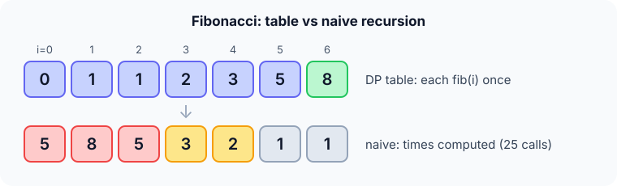

Prerequisites
- Recursion.
- Divide and conquer, to see what changes.
- Arrays used as lookup tables.
The analogy
Everyday analogy
If someone asks you "what's 1 + 1 + 1 + 1 + 1?", you count 5. If they add "+ 1", you don't recount: you remember 5 and say 6.
Dynamic programming is that memory. Each answer to a smaller question is written down once, then reused instead of recomputed.
How it works
When DP applies: overlapping subproblems (the same smaller problems appear again and again) and optimal substructure (the answer is built from answers to smaller problems).
Start with the Fibonacci table by hand
$fib(0) = 0$, $fib(1) = 1$, and $fib(n) = fib(n-1) + fib(n-2)$. Predict, then open "Check".
Example: predict before you read
Step 1. Fill the table from fib(0) to fib(6).
Check
0, 1, 1, 2, 3, 5, 8. Each entry is the sum of the two before it.
Step 2. Cover the next line and guess: in the naive recursion for fib(6), how many times is fib(2) computed?
Check
5 times. fib(1) is reached 8 times, and there are 25 calls in total.
Step 3. How many additions does the table need for fib(6)?
Check
5 additions, one for each entry from fib(2) to fib(6). Nothing is computed twice.

Quick recall: Before reading further, cover the text above and say out loud: what makes naive recursive Fibonacci so slow?
Check your answer
It solves the same subproblems again and again: fib(2) alone is recomputed 5 times for fib(6).
Finish the picture: coins, where greedy failed
Fewest coins for amount 6 with coins {1, 3, 4}. Let dp[a] be the fewest coins for amount a: dp[a] = 1 + min(dp[a − c]) over coins c ≤ a.
- Fill dp[0..5]. Predict the values.
Check
dp = 0, 1, 2, 1, 1, 2 (for example dp[5] = 1 + dp[1] using the coin 4).
- dp[6]. Predict it.
Check
1 + min(dp[5], dp[3], dp[2]) = 1 + min(2, 1, 2) = 2, using 3 + 3. Greedy gave 3 coins.
Quick recall: Without scrolling up, say out loud: why is dp[6] = 2 for coins {1, 3, 4}?
Check your answer
If the last coin is 3, the rest is amount 3, which needs dp[3] = 1 coin, so 2 coins in total. Ending with 4 or 1 leaves amounts needing 2 coins, giving 3. The best is 2.
The rule in plain words
Define the subproblem (here, fib(i) or dp[a]) and a recurrence that builds it from smaller ones, plus the base cases.
Then either memoise the recursion (top-down) or fill a table from the smallest case up (bottom-up), so each subproblem is solved once.
Quick recall: Before you read the code, describe the difference between memoisation and a bottom-up table, in your own words. Then check below.
Check your answer
Memoisation keeps the recursion but stores each answer the first time and returns it on later calls. Bottom-up fills the table in order from the smallest case, with a loop and no recursion.
The code
Read this code after you have filled the table by hand. It will make more sense.
int fib_memo(int n, int memo[]) { /* memo[i] = -1: not computed yet */
if (n < 2) return n; /* base cases */
if (memo[n] != -1) return memo[n]; /* reuse a stored answer */
memo[n] = fib_memo(n - 1, memo) + fib_memo(n - 2, memo);
return memo[n];
}
int fib_table(int n) { /* bottom-up: fill the table */
int t[100];
t[0] = 0; t[1] = 1;
for (int i = 2; i <= n; i++) t[i] = t[i - 1] + t[i - 2];
return t[n];
}Definition
What you just did, in one line: dynamic programming solves a problem by breaking it into overlapping subproblems, solving each one once, and storing the answers in a table for reuse.
graph TD
F6["fib(6)"] --> F5["fib(5)"]
F6 --> F4a["fib(4)"]
F5 --> F4b["fib(4)"]
F5 --> F3a["fib(3)"]
F4a --> F3b["fib(3)"]
F4a --> F2a["fib(2)"]
How fast is it?
Quick recall: Before looking at the formula, predict: roughly how many naive calls does fib(30) make?
Check your answer
About 2.7 million ($2 \cdot fib(31) - 1$), versus 29 additions with a table.
The naive recursion makes a number of calls that grows like Fibonacci itself; the table does one addition per entry:
$$\text{naive calls}(n) = 2\,fib(n+1) - 1 = O(1.618^n), \qquad \text{DP} = O(n)$$For fib(6): $2 \cdot 13 - 1 = 25$ calls versus 5 additions. In general, DP time = number of subproblems × work per subproblem.
| Approach | Time | Extra space |
|---|---|---|
| Naive recursion | $O(1.618^n)$ | $O(n)$ call stack |
| Memoisation (top-down) | $O(n)$ | $O(n)$ table + stack |
| Bottom-up table | $O(n)$ | $O(n)$ table |
| Keep only the last two values | $O(n)$ | $O(1)$ |
| Coin change, amount $A$, $k$ coins | $O(A \cdot k)$ | $O(A)$ |
Warning
DP needs overlapping subproblems to pay off. Merge sort's halves never repeat, so memoising them only wastes memory; that's plain divide and conquer.
Exam tip
For any DP question, write three things first: what dp[i] means in words, the recurrence, and the base cases. The code follows almost mechanically.
Common mistakes
- Not defining precisely what a table entry means, so the recurrence comes out wrong.
- Filling the table in the wrong order, reading entries that aren't computed yet.
- Forgetting base cases (fib(0), fib(1), dp[0] = 0).
Try it yourself
Exercise 1 (warm-up)
You can climb 1 or 2 stairs at a time. In how many ways can you climb 5 stairs? Use a table ways[0..5] with ways[0] = 1, ways[1] = 1.
Hint
ways[n] = ways[n − 1] + ways[n − 2].
Answer
ways = 1, 1, 2, 3, 5, 8, so 8 ways. It's Fibonacci in disguise.
Exercise 2 (a bit harder)
Fewest coins for amount 7 with coins {1, 3, 4}. Fill dp[0..7] and give the coins used. Write your answer down before you open it.
Show answer
dp = 0, 1, 2, 1, 1, 2, 2, 2. dp[7] = 1 + min(dp[6], dp[4], dp[3]) = 1 + 1 = 2: coins 3 + 4.
Did you know?
Did you know?
Richard Bellman named it "dynamic programming" in the 1950s partly to sound impressive to a defence secretary who disliked the word "research"; "programming" meant planning, not coding.
DP is everywhere: spell-checkers (edit distance), DNA sequence alignment, route planning, and the Viterbi algorithm in speech recognition.
Key points to remember
If you remember one thing from each line, remember the because.
- DP is fast because each subproblem is solved once and then looked up.
- Naive Fibonacci is exponential because the same subproblems are recomputed in every branch.
- DP time is subproblems × work each because every table entry is filled exactly once.
- Bottom-up order matters because an entry can only use entries that are already filled.
- DP fixes greedy's coin failure because it compares every coin choice instead of committing to one.
Self-check questions
Answer these in order, out loud. They follow the page, so your answers become the script of your video.
- How is dynamic programming like remembering that 1 + 1 + 1 + 1 + 1 = 5?
Sample answer
When asked to add one more, you reuse the 5 instead of recounting; DP stores each sub-answer and reuses it.
- Fill the Fibonacci table up to fib(6) and say how many additions it took.
Sample answer
0, 1, 1, 2, 3, 5, 8; five additions, one per entry from fib(2) to fib(6).
- Why does
fib_memocheckmemo[n] != -1before recursing?A good answer says what −1 means.
Sample answer
−1 marks "not computed yet". If the entry is filled, the stored answer is returned immediately, which is what stops the exponential blow-up.
- So what is dynamic programming, in one sentence?
Sample answer
Solving a problem by splitting it into overlapping subproblems, solving each once and storing the answers for reuse.
- Why is naive recursive Fibonacci exponential while the table is linear?
A good answer counts how often fib(2) is computed.
Sample answer
The recursion tree recomputes the same values in every branch (fib(2) five times for fib(6)), so calls grow like $1.618^n$. The table computes each value once: $n$ steps.
- What do memoisation, bottom-up and the two-variable version cost?
Sample answer
All $O(n)$ time; $O(n)$ space for the first two, $O(1)$ for the last.
- How does DP solve the coin problem where greedy fails?
Sample answer
dp[a] tries every coin as the last coin and takes the best: dp[6] = 1 + min(dp[5], dp[3], dp[2]) = 2, using 3 + 3.
- If you had to teach this to a friend in 2 minutes, what would you leave out, and why?
Sample answer
I'd leave out the call-count formula and the two-variable trick. I'd keep the "remember 5" analogy, the Fibonacci table, the coin example, and "solve each subproblem once, store it".
External resources
- GeeksforGeeks: Dynamic programming: tutorials and classic problems.
- Wikipedia: Dynamic programming: history and theory.
- MIT OCW 6.006: four lectures on dynamic programming.
Videos
- YouTube search: DP with Fibonacci and memoisation: pick a short introduction.